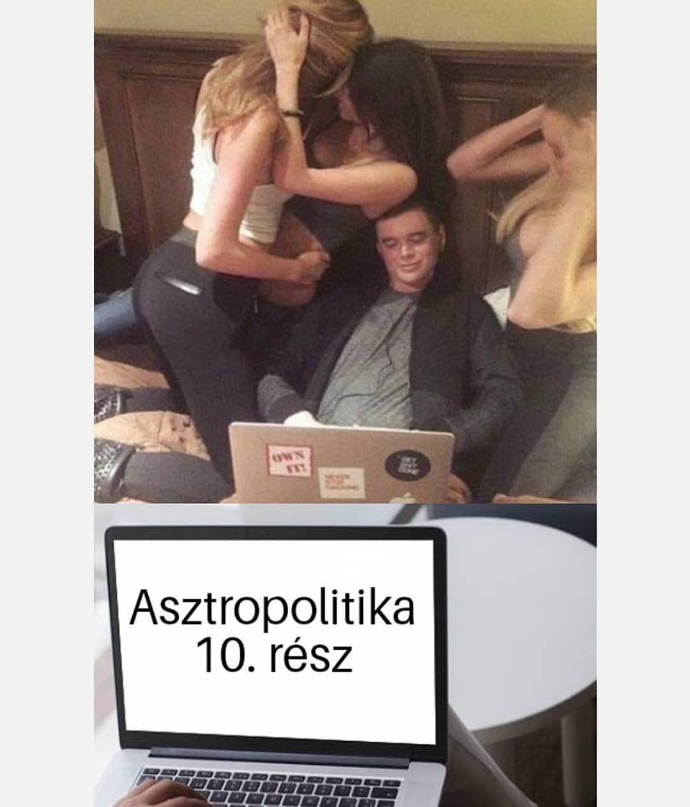
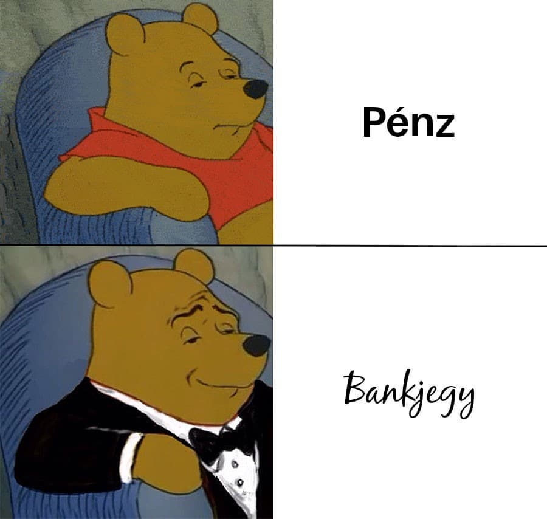
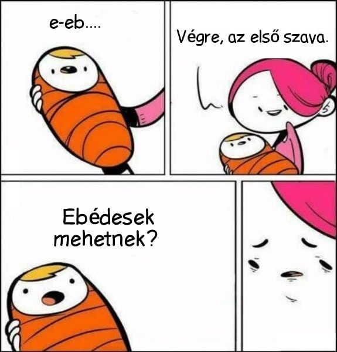
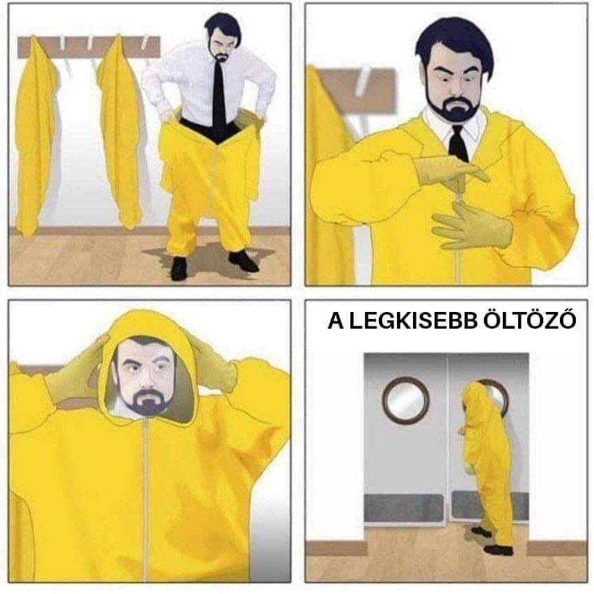

a mém jó
A mémek sok ember számára élvezetesek és szórakoztatóak, mert gyakran humorosak és könnyen megérthetőek. Emellett a mémek segíthetnek az embereknek abban, hogy kifejeződjenek érzéseik és gondolataik, és kapcsolatot teremtsenek másokkal. Bár a mémek általában rövid és könnyen emészthető tartalmak, egyes mémek képesek összefoglalni és érzékeltetni bonyolult gondolatokat is.
- Chat GPT



